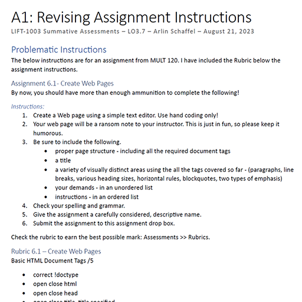
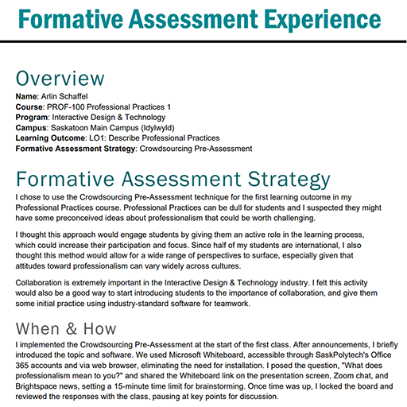

Assessment & Evaluation

The Assessment and Evaluation competency focuses on evaluating learning and performance, using a variety of assessment tools and techniques and managing course assessment strategies.

(Click to View)
LIFT-1003 Revising Assignment Instructions
As part of LIFT-1003 Summative Assessment in August 2023, I revised assignment instructions and rubric for a problematic assignment.
The assignment was for MULT 120 and required students to create a basic HTML webpage. Originally the assignment lacked clear expectations with loosely referenced required HTML tags. The tone was informal and the rurbic grouped multiple technical elements together under broad categories.
In my revision, I replaced the theme with a more realistic content-conversion task and clearly listed required HTML elements. I added a validation requirement using the industry-standard W3C validator, and separated rubric criteria by skill area.
This process has made me more deliberate about aligning outcomes with assessment criteria across my courses.

(Click to View)
LIFT-1002 Formative Assessment Experience
As part of LIFT-1002 Formative Assessment in October 2023, I created a "Crowdsourcing Pre-Assessment" formative assessment strategy.
The activity asked students to define "professionalism" using a shared digital whiteboard at the start of the course. This allowed me to surface prior knowledge, misconceptions, and cultural differences before delivering formal instruction. Reviewing and organizing their responses helped me identifiy where clarification was needed.
This experience strengthened my understanding of formative assessment as a diagnostic tool rather than an evaluative one.